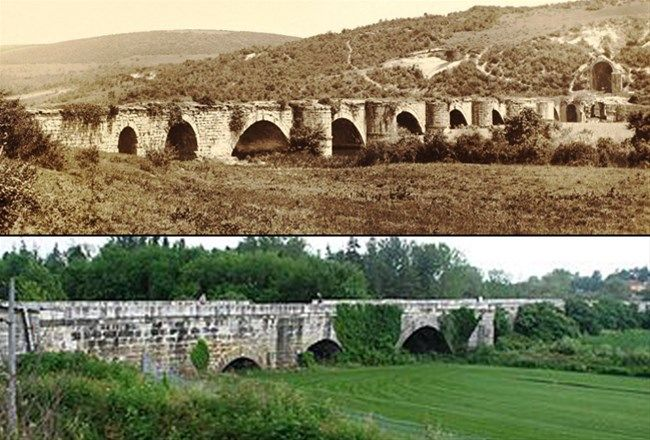
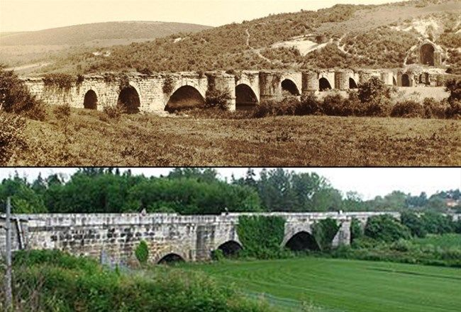

Büyük Mirasımız Beşköprü
Bizans İmparatoru Justinianus (527-565) tarafından MS 558-560 yıllarında yaptırılan bu taş köprü, 365 metre uzunluğunda, 9,85 metre genişliğinde olup toplam 12 kemerlidir. Köprünün batı ucunda tak izi, doğu ucunda apsisli yapı ve köprü ile ilgili tonozlu yapı kalıntıları bulunmaktadır. Önceleri Latince “pons” (köprü) denen köprünün kendine özgü başka bir adı yoktu. Sonradan, “pons”un Latincede “köprü” demek olduğunu bilmeyen halk, bu sözcüğü bir özel ad olarak algılayıp köprüyü, “Pons Köprüsü” anlamında Pontogephyra diye anmaya başlamıştır. Daha sonraları, bu ad Pentegephyra’ya (Beş Köprü) dönüşmüşse de köprü şu veya bu biçimde beş parçalı olmadığı gibi, beş kemerli de değildir. Justinianus Köprüsü 2018 yılında UNESCO Dünya Miras Geçici Listesi'ne alınmıştır. Justinianus Köprüsü Nerede? Sapanca Gölü’nün sularını Sakarya Nehri’ne boşaltan Çark Deresi (Melas Çayı) üzerinde yer alan Justinianus Köprüsü, Erken Bizans Dönemi’nin Anadolu’daki en görkemli anıtsal yapılarındandır.
 
